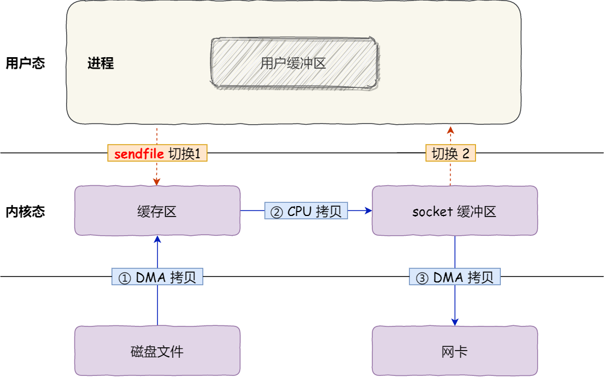
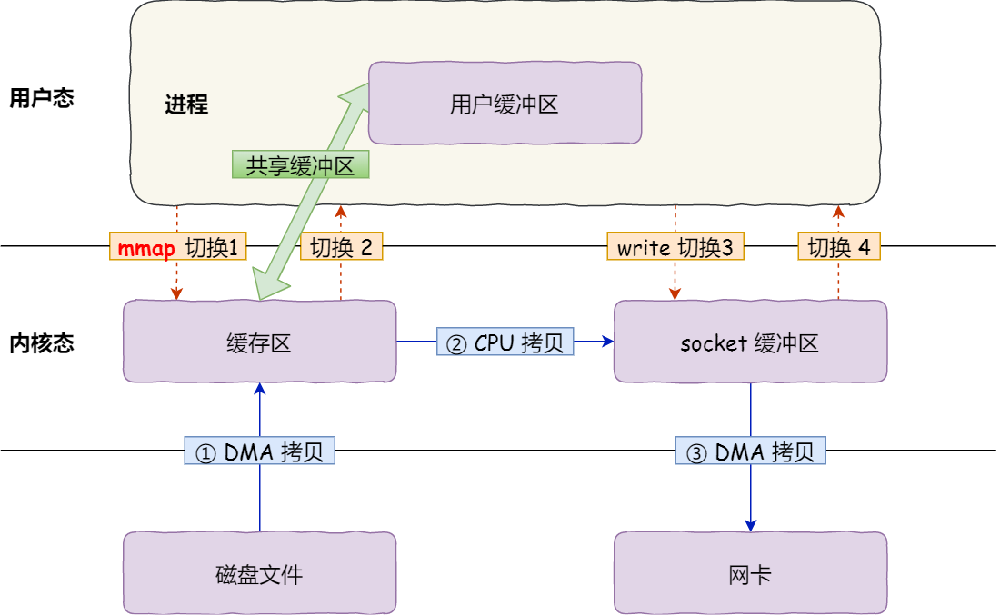
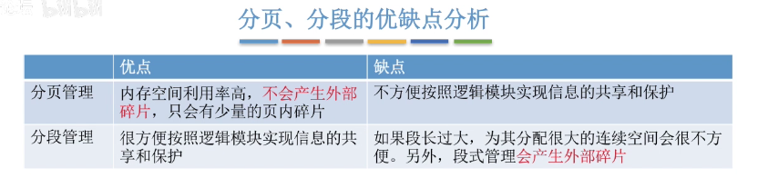

进程和线程区别
1、进程是资源调度的基本单位，运行一个可执行程序会创建一个或多个进程，进程就是运行起来的可执行程序
2、线程是程序执行的基本单位，是轻量级的进程。每个进程中都有唯一的主线程，且只能有一个，主线程和进程是相互依存的关系，主线程结束进程也会结束。线程启动速度快，轻量级
进程的资源：
- 独立的内存空间（虚拟地址空间）
- 系统资源，如打开的文件、信号处理器等
线程的资源:
- 程序计数器：用于指令读取，函数调用，指令跳转
- 寄存器：用于保存线程的上下文信息。
- 栈
协程
协程是用户态的轻量级线程，线程内部调度的基本单位，都是运行在用户态，拥有自己的寄存器上下文和栈 c++的协程库: boost coroutine, libco
- 线程由操作系统管理，切换需要操作系统内核，耗费时间和资源，协程切换是程序员自己控制
- 线程之间通信通过共享内存或者传递消息，而协程之间直接通过函数调用或者共享变量
- 线程可以通过多个 cpu 实现并行，但是协程只在一个线程中
- 线程创建、销毁需要操作系统接入，而协程在用户空间内完成
- 协程适用于 高并的网络编程，异步 io 操作，高并发网络编程，**短时间的计算密集型，**线程：cpu 密集型
多个线程情况下 CPU 利用率不高
1、同步和通信不高效(死锁，数据竞争)
2、线程过多：竞争过于激烈； 线程数过少：CPU 核心限制
3、io 密集型
epoll 的底层实现
红黑树用来管理所有的文件描述符
内核中的事件表：存储所有就绪的文件描述符
内核中的回调函数：内核调用回调函数处理处理所有就绪的文件描述符 同步模型的优点：
同步 io 和异步 io 的优缺点
同步 io 优点：
- 编程简单
- 可靠性高（阻塞）
同步模型的缺点：
- 性能低（阻塞） 异步模型的优点：
- 高性能
- 编程复杂
异步模型的缺点：
- 可靠性低（可能会出现操作未完成就返回结果，需要判断错误）
互斥锁、读写锁、自旋锁
互斥锁，最基本的同步机制，保护临界区资源访问
读写锁，允许多个线程同时读共享资源，但是只允许一个锁读取共享资源，读写锁的实现通常是基于互斥锁和条件变量实现的。
自旋锁是一种轻量级同步机制，当自旋锁被占用时，线程不会进入阻塞状态，而是一直循环等待，适用于锁占用短的场景，锁占用长的
加锁的方式
- 阻塞锁，一直等待资源
- 自旋锁，一直循环等待
- 乐观锁，假设读取共享资源的时候不会修改它，如果被修改了，就重新尝试
信号量能保证线程同步吗？
信号量可以用来保证线程同步，但最好与锁一起使用来保证线程互斥。信号量是一种计数器，用来保护共享资源。当一个线程想要访问共享资源时，它必须先获取信号量，然后才能访问共享资源。如果信号量的计数器为 0，则线程必须等待，直到有另一个线程释放信号量。这样可以确保多个线程不会同时访问共享资源，从而保证线程同步。
在使用信号量时，需要注意一些问题。首先，信号量只能保证线程同步，不能保证线程互斥。如果多个线程都可以获得信号量，则它们可以同时访问共享资源。因此，最好与锁一起使用来保证线程互斥。其次，信号量可能会产生死锁问题。当多个线程互相等待对方释放信号量时，就会发生死锁。因此，在使用信号量时，需要仔细考虑并发情况，以确保线程安全和性能。
linux 下递归删除某个目录下以 cpp 为结尾的文件
find /path/to/directory -type f -name "*.cpp" -delete
如果不加 -type f，find 命令会查找目录中的所有类型的文件，包括普通文件、目录、符号链接等，可能会误删一些非文件类型的内容。加上 -type f 可以限定只查找普通文件，避免误删其他类型的内容。
死锁的四个条件
- 互斥条件：一个资源每次只能被一个进程使用。
- 请求与保持条件：一个进程因请求资源而阻塞时，对已获得的资源保持不放。
- 不剥夺条件：进程已获得的资源，在末使用完之前，不能强行剥夺。
- 循环等待条件：若干进程之间形成一种头尾相接的循环等待资源关系。
如果一个系统中存在上述四个条件，就会出现死锁的情况，死锁的解决方法通常需要采用多种方法，如锁机制的优化、资源分配算法的改进等。
内核态和用户态
内核态（Kernel Mode）和用户态（User Mode） 是操作系统设计中的两种运行级别或模式，用于区分进程对硬件资源的访问权限。
内核态（Kernel Mode）
- 在内核态下，代码有权访问系统的任何资源，不受任何保护和限制。它可以直接执行任意 CPU 指令，可以访问任何物理内存地址，也可以访问和操作所有的硬件设备。
- 由于其高权限，内核态主要被操作系统内核、设备驱动程序等使用。
- 错误的操作可能导致整个系统崩溃或者数据丢失。 用户态（User Mode）
- 在用户态下，代码执行在一个受保护的环境中，只能访问一部分范围的内存，不能直接访问硬件设备，对 CPU 指令集的使用也有所限制。
- 当一个用户程序需要进行一项系统调用（如读写文件，发送网络数据）时，它会切换到内核态，由内核代为完成，然后再切换回用户态。
- 这种机制能够保护系统的稳定性和安全性，防止用户程序的错误操作影响整个系统。
linux 常用命令
下面列举一些常用的 Linux 命令：
- ls：列出目录下的文件和子目录。
- cd：切换当前目录。
- pwd：显示当前所在目录的路径。
- mkdir：创建一个新目录。
- rmdir：删除一个空目录。
- rm：删除文件或目录。
- cp：复制文件或目录。
- mv：移动或重命名文件或目录。
- cat：查看文件内容。
- grep：在文件或输入流中查找匹配的文本。
- tail：查看文件的末尾内容。
- head：查看文件的开头内容。
- find：在指定目录下查找文件。
- chmod：修改文件或目录的权限。
- chown：修改文件或目录的所有者。
- ps：查看当前系统进程。
- top：查看当前系统资源占用情况。
- tar：打包和解压缩文件。
- ssh：远程登录到另一台计算机。
- scp：在本地和远程计算机之间复制文件。
- df：查看磁盘空间使用情况。
- free：查看系统内存使用情况。
- uname：查看系统信息。
- ifconfig：查看网络接口信息。
- ping：测试网络连接。
- traceroute：查看网络路由情况。
- netstat：显示网络连接、路由表和网络接口等信息。
- iptables：管理系统防火墙规则。
- systemctl：管理系统服务。
- ps aux：显示所有进程的详细信息。
- kill：终止指定进程。
- nohup：让进程在后台运行。
- screen：在一个终端窗口中打开多个终端会话。
- wget：下载文件。
- curl：向服务器发送请求并显示响应。
- tar：压缩和解压缩文件。
- gzip：压缩和解压缩文件。
- zip：压缩和解压缩文件。
- ssh-keygen：生成 SSH 密钥对。
linux 中查询进程占用 cpu 的情况
在 Linux 系统中，可以使用 top 命令来查看系统中占用 CPU 最多的进程，具体操作如下：
打开终端并输入 top 命令。 top 命令会实时显示系统资源使用情况，包括 CPU、内存、进程等。在进程列表中，可以看到各个进程的 CPU 使用情况以及其他相关信息。 进程列表默认按照 CPU 使用率排序，可以通过按下“P”键，然后再按下“Enter”键，将进程列表按照 CPU 使用率从高到低排序。
打开终端并输入 ps aux 命令。 ps 命令会列出当前系统中所有的进程，包括进程的 PID、CPU 占用率、内存使用情况等。 若要按照 CPU 使用率排序，可以使用 ps aux –sort=-%cpu 命令。
0 拷贝
普通拷贝  内存映射 mmap  sendfile
零拷贝（Zero Copy）是一种提高数据传输效率和性能的技术，其基本思想是在数据传输过程中减少数据拷贝和内存复制操作，从而减少 CPU 的开销和系统资源的占用，提高数据传输的效率和性能。
在传统的数据传输方式中，数据通常需要从应用程序的缓冲区复制到内核空间的缓冲区，然后再从内核空间的缓冲区复制到网络设备的缓冲区，最后再从网络设备的缓冲区复制到目标主机的内核空间缓冲区，最后再从目标主机的内核空间缓冲区复制到目标应用程序的缓冲区。这样的数据传输方式需要经过多次数据拷贝和内存复制操作，耗费大量的 CPU 时间和系统资源，降低了数据传输的效率和性能。
零拷贝技术可以通过使用 DMA（Direct Memory Access）技术和共享内存等技术，将数据从应用程序的缓冲区直接传输到网络设备的缓冲区，从而避免了数据拷贝和内存复制操作。这样就可以大大减少 CPU 的开销和系统资源的占用，提高数据传输的效率和性能。
在使用零拷贝技术时，需要注意以下几点：
- 零拷贝技术需要硬件和操作系统的支持，不是所有的硬件和操作系统都支持零拷贝技术。
- 零拷贝技术需要应用程序和网络设备之间的协作，需要对数据传输进行特殊处理。
- 零拷贝技术可能会增加代码的复杂度和难度，需要谨慎使用。
总之，零拷贝技术可以提高数据传输的效率和性能，但需要硬件和操作系统的支持，并且需要谨慎使用。
页调度/置换算法
页调度（Page Replacement）是操作系统中的一个重要概念，用于管理内存中的虚拟页（Virtual Page），当内存中的页框（Page Frame）不足时，需要将某些页从内存中换出（Swap Out），并将新的页换入（Swap In），以便为新的进程或线程腾出空间。
FIFO：最先进入内存的页面最先被替换。 Optimal：理论上最佳，替换未来最长时间不会被访问的页面，但实际难以实现。 LRU：替换最近最少使用的页面，需要记录页面使用历史。 LFU：替换最不常使用的页面，基于访问频率。 Clock：循环队列置换，是 LRU 的高效实现，广泛用于操作系统。 NUR：最近未使用，是对 LRU 的一种近似实现。 Random：随机选择一个页面替换。
如何优化生产者消费者模型
-
使用适当的数据结构：例如，使用支持并发的阻塞队列可以简化编程，提高效率。
-
合理设置缓冲区大小：如果缓冲区过小，可能导致生产者频繁阻塞；若过大，可能浪费内存资源。
-
优化线程数量：生产者和消费者的线程数量应根据系统的处理能力进行调整。过多线程可能导致上下文切换开销增加，过少则不能充分利用系统资源。
-
使用异步处理：避免生产者和消费者之间的直接等待关系，提高吞吐量。
-
采用批处理：批量生产和消费数据可以减少线程间同步的次数，提高处理速度。
-
考虑优先级：对于有优先级需求的场景，可以设置优先级队列以满足业务需求。
-
避免频繁 GC：如果生产者和消费者频繁创建和销毁对象，可能引发频繁的垃圾收集，影响性能。可以通过对象池等方式复用对象。
-
评估并优化锁的使用：确保必要且适当的锁定以减少竞争，但也要避免引入不必要的锁。
DMA 技术（page cache）
是 DMA 的基本实现过程：
-
请求 DMA 传输：当设备需要读写内存时，它会发出 DMA 传输的请求。
-
DMA 控制器接管总线：一旦 CPU 接到 DMA 请求，并且在完成当前指令后，它会释放总线并将其交给 DMA 控制器。
-
执行数据传输：DMA 控制器将数据从内存中读取并发送给设备，或者从设备读取数据并将其写入内存。在此过程中，CPU 无需参与数据的读写操作，可以执行其他任务。
-
传输完成：DMA 控制器在传输完成后，会向 CPU 发出中断信号，通知 CPU 数据已经传输完成。
-
CPU 重新接管总线：在处理完 DMA 传输完成的中断后，CPU 再次接管总线，恢复正常的指令执行。
分段和分页
分段
程序是由若干个逻辑分段组成的，如可由代码分段、数据分段、栈段、堆段组成。不同的段是有不同的属性的，所以就用分段（Segmentation）的形式把这些段分离出来。 通过段号和偏移量确定物理地址 不足之处：
- 内存碎片的问题（外部内存）。
- 内存交换的效率低。
分页
分页是把整个虚拟和物理内存空间切成一段段固定尺寸的大小
页表是存储在内存里的，内存管理单元 （MMU） 就做将虚拟内存地址转换成物理地址的工作。
- 提高内存的利用率，没有外部碎片
- 但会产生内碎片（一个页可能填充不满）。
而当进程访问的虚拟地址在页表中查不到时，系统会产生一个缺页异常，进入系统内核空间分配物理内存、更新进程页表，最后再返回用户空间，恢复进程的运行。
如果内存空间不够，操作系统会把其他正在运行的进程中的「最近没被使用」的内存页面给释放掉，也就是暂时写在硬盘上，称为换出（Swap Out）。一旦需要的时候，再加载进来，称为换入（Swap In）。所以，一次性写入磁盘的也只有少数的一个页或者几个页，不会花太多时间，内存交换的效率就相对比较高。
TLB,页表缓存

如何优化读
优化读操作可以从多个角度进行：
-
使用缓存：将常用数据或最近使用的数据存储在内存中，可以大大提高读取速度。
-
预读（Prefetching）：如果能预测到未来会读取哪些数据，可以提前将这些数据加载到缓存中。
-
数据分区：将数据分布在不同的磁盘上，可以并行地读取数据，提高读取速度。
-
索引：对于数据库等系统，使用索引可以快速定位到数据，减少磁盘 I/O 操作。
-
数据压缩：压缩数据可以减少读取的数据量，但需要注意解压缩可能带来的额外计算开销。
-
批量读取：一次读取大块的数据比多次读取小块的数据更高效。
-
合理排列数据：尽可能地使顺序访问的数据在物理硬盘上连续存放（例如，利用文件系统的预留空间功能）。
虚拟内存
虚拟内存是一种内存管理技术，它使得应用程序认为它们自己拥有连续可用的内存（一个连续完整的地址空间），而实际上，它们的物理内存被切割成了多个块，这些块在物理内存和硬盘之间动态地交换。
以下是虚拟内存的基本原理和特点：
地址转换：操作系统通过页表将虚拟地址（程序中使用的地址）映射为物理地址（实际内存硬件的地址）。这样，程序可以在一个连续的地址空间中运行，即使物理内存是离散分布的。
按需加载和置换：当程序访问某个地址时，如果对应的页面不在物理内存中（发生缺页中断），操作系统会选择一个页面置换出内存，将需要的页面从硬盘载入内存。这样，只有需要用到的页面才被加载，节省了内存资源。
内存保护：每个程序都在其自己的虚拟地址空间中运行，无法访问其他程序的地址空间，增强了系统的稳定性和安全性。
内存共享和映射文件：虚拟内存技术使得多个进程可以共享物理内存或映射同一个文件到其虚拟内存，方便了进程间的通信和文件操作。
虚拟内存大大提高了内存的使用效率，简化了程序的编写，是现代操作系统的重要组成部分。
kill -9 和 kill -15 的区别？
kill 命令在 Linux 中被用来终止或发送信号给进程。-9 和-15 是具体的信号编号，分别对应 SIGKILL 和 SIGTERM 信号。
- kill -9 (SIGKILL)
- SIGKILL 信号会强制结束进程，进程无法忽略这个信号。当你发送 SIGKILL 信号后，操作系统会立刻停止进程。由于进程没有机会进行清理（例如关闭打开的文件或网络连接），所以可能会导致数据丢失或其他问题。
- kill -15 (SIGTERM)
- SIGTERM 是默认的 kill 信号。与 SIGKILL 不同，进程能够捕捉到 SIGTERM 信号，并决定如何响应。大多数进程会在接收到 SIGTERM 后进行一些清理工作，然后优雅地结束。如果进程忽略了 SIGTERM 信号或者无法正常结束，则可以使用 SIGKILL 来强制结束。
僵尸进程和孤儿进程
僵尸进程是已终止但父进程未回收其状态信息的进程。解决方法：父进程应调用 wait()获取子进程状态，或者将这些进程的父进程更改为 init。
孤儿进程是父进程结束后仍在运行的进程。处理方式：被 init 进程自动接管，无需特别处理。
自旋锁和互斥锁
自旋锁（Spinlock）：
- 用于保护短时期的临界区。当无法获取锁时，线程会一直在循环中尝试获取锁（忙等待即"自旋"），而不是睡眠。
- 更适合于锁保护代码执行时间非常短的情况，因为它避免了上下文切换的开销。
互斥锁（Mutex）：
- 当无法获得锁时，线程会进入睡眠状态，直到有其他线程释放锁唤醒它。
- 如果被保护的代码可能需要长时间执行或等待其他资源，使用互斥锁将更有效，因为它能让出 CPU 给其他线程使用。
sed 和 awk 的区别
sed：
主要用于文件中的文本替换。
- 提供了基于行的处理方式，例如删除行、插入行或替换行。
- 常用于简单的文本转换和操作。 awk：
更强大的文本处理工具，提供了编程语言的特性，如变量、循环和条件判断。
- 可以处理多个文件。
- 主要设计用来处理具有明确定义格式和字段的文本。
history 命令
history: 显示先前执行过的命令列表。history n: 显示最近的 n 个命令。!n: 重复执行历史中的第 n 个命令。!!: 重复执行上一个命令。!-n: 重复执行倒数第 n 个命令。!string: 运行以指定字符串开始的最后一个命令。!?string?: 运行包含指定字符串的最后一个命令。history -c: 清除历史记录。history -d offset: 删除历史中的特定条目。
Bash shell 允许通过 HISTCONTROL 和 HISTIGNORE 环境变量来控制history命令的行为：
-
HISTCONTROL可以设置为：ignorespace：以空格开头的命令不会保存到历史记录中。ignoredups：连续的重复命令只会保存一次。ignoreboth：同时应用上述两种规则。
-
HISTIGNORE允许您指定一个模式列表，匹配的命令不会保存到历史记录中。例如，HISTIGNORE='ls💿pwd'会忽略 ls、cd
find 命令
find命令用于在 Linux 文件系统中搜索和定位文件的列表，此命令可以根据多种条件如名称、类型、大小等来查找文件。
find /dir/ -name filename: 在/dir/目录及其子目录中查找名为 filename 的文件。find /dir/ -iname filename: 同上，但忽略大小写。find . -type f: 在当前目录及其子目录中查找所有普通文件。find . -type d: 在当前目录及其子目录中查找所有目录。find /dir/ -user username: 查找/dir/目录及其子目录中所有者为 username 的文件。find /dir/ -mmin n: 查找/dir/目录及其子目录中在 n 分钟前被修改的文件。find /dir/ -size +10M: 查找/dir/目录及其子目录中大于 10MB 的文件。
你还可以通过-exec 选项与其他命令结合使用，对搜索结果执行操作： 8. find /dir/ -name '*.txt' -exec rm {} \;: 在/dir/目录及其子目录中查找所有.txt 文件并删除之。
mmap
mmap() 是一种在进程的虚拟地址空间内映射文件或设备的方法，它是 Unix 和 Linux 系统提供的系统调用。mmap() 的全称是“memory map”，即内存映射。
当你使用 mmap() 映射一个文件时，你实际上创建了一个新的内存区域，并将文件的内容放到这个内存区域中。此时，不需要再使用 read() 或 write() 这类系统调用来操作文件，而是直接通过内存操作就可以对文件进行读写。
mmap() 函数原型如下：
void *mmap(void *addr, size_t length, int prot, int flags,int fd, off_t offset);
addr：指定映射区的起始地址，通常设置为 NULL，表示由系统自动选择地址。length：映射区的长度。以字节为单位，不足一内存页按一内存页处理。prot：期望的内存保护标志，可以为PROT_NONE、PROT_READ、PROT_WRITE、PROT_EXEC，或者他们的组合。flags：指定映射对象的类型，必选项是MAP_SHARED（共享）与MAP_PRIVATE（私有），还可以与MAP_FIXED组合。fd：要映射的文件描述符。offset：文件映射的偏移量，通常设置为 0，表示从文件最前方开始对应。
mmap() 返回一个指向映射区域开始处的指针。
mmap() 映射的内存区域在进程退出时会被自动解除映射，当然，也可以显式地调用 munmap() 来解除映射。
通常情况下，mmap() 用于处理大文件和实现共享内存。
merge 和 rebase 的区别
Merge（合并）：
- 保留原始分支的历史，不改变提交顺序。
- 创建一个新的合并提交，将两个或多个分支的更改合并到一起。
- 可能会产生较为复杂的提交历史，因为每个分支的提交都会保留。
Rebase（变基）：
- 将当前分支的更改移动到另一个分支的基础上，形成一个线性历史。
- 不会创建新的合并提交，使得提交历史更为简洁。
- 可能会改写提交历史，因此需要谨慎使用，尤其是在公共分支上。
进程和线程
1、线程启动速度快，轻量级
2、线程的系统开销小
3、线程使用有一定难度，需要处理数据一致性问题
4、同一线程共享的有堆、全局变量、静态变量、指针，引用、文件等，而独自占有栈
#include <iostream>
#include <thread>
#include <fstream>
// 全局变量
int globalVar = 10;
// 静态变量
static int staticVar = 20;
// 在堆上分配内存
int* heapVar = new int(30);
void threadFunc(std::ofstream& outFile) {
// 修改全局变量
++globalVar;
// 修改静态变量
++staticVar;
// 修改堆变量
++(*heapVar);
outFile << "Thread ID: " << std::this_thread::get_id() << std::endl;
outFile << "Global variable: " << globalVar << std::endl;
outFile << "Static variable: " << staticVar << std::endl;
outFile << "Heap variable: " << *heapVar << std::endl;
outFile << "---------------------------" << std::endl;
}
int main() {
std::ofstream outFile("shared.txt");
if (!outFile) {
std::cerr << "Error opening file." << std::endl;
return -1;
}
std::thread t1(threadFunc, std::ref(outFile));
std::thread t2(threadFunc, std::ref(outFile));
t1.join();
t2.join();
delete heapVar; // 记得删除堆内存
outFile.close();
return 0;
}
...